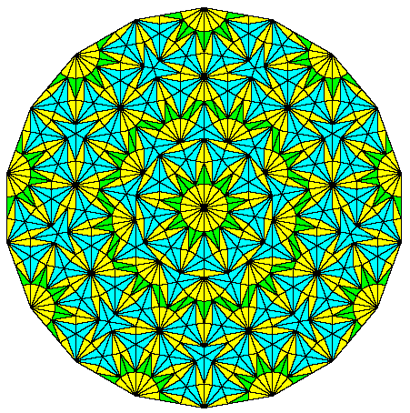

Let's recall two facts from previous videos:
The mathematical formulas we typically use to define functions are finite-length strings of text. Computer programs are also finite-length strings of text. So
So there are more functions than there are formulas or computer programs. This implies that there are functions for which we can't write a formula or compute the function using a computer program.
This is definitely a non-constructive proof. I have no way to describe what these functions are, precisely because they don't have finite-length decriptions. We do know that they can't have a pattern that repeats as the input value heads out towards infinity.
Here is a specific example of a problem for which we cannot build a program:
The Halting Problem: Given the text for a program P, decide whether P eventually halts.
It's impossible to write an algorithm to solve this task. The proof is beyond the scope of this course. But it's done with a modification of the diagonalization idea that we used to prove that certain sets are uncountable.
Notice that we're talking about whether we can write a fully general algorithm that will work on any input program P, even nasty bits of spaghetti code. Obviously we can write an algorithm that will find the answer in many cases.
There are three ways that a program could behave as it runs:
The problem is difficult because of the third case. If we only had to worry about the first two cases, our algorithm could simply watch the state of the program P. After some finite amount of time, P would have to halt or repeat a memory state.
If a program has a limit on how much memory it can use, it must eventually halt or loop. So, technically, a real-world program can't continue forever without looping. However, in practice, a typical computer has enough memory that a program can spend a vast amount of time running without repeating the same memory state.
You can see the same three-way behavior pattern in other examples involving uncountable sets or or uncomputable questions:
Now, let's think about the problem of covering the plane with a finite set of tiles. It's relatively easy to make a pattern that repeats in a regular way, using either a single shape or a finite set of shapes.
from Wikipedia
These repeating patterns are called "periodic tilings". Since ancient times, they have been used to make pretty patterns on floors and walls using ceramic tiles.
a floor in Seville, Spain, from Wikipedia
If you cut out a rectangle of appropriate size, you can make the whole pattern by making copies of whatever is on the rectangle. This is how modern builders often use cheap materials to simulate the look of fancy ceramic tiles.
Certain shapes and sets of shapes can't cover the whole plan. For example, if you try to cover the plan with copies of a single regular pentagon, you quickly get stuck with a situation where you have a gap that you can't fill.
These repeating and self-stopping patterns are like two of our program behaviors: looping and halting. Can we also make sets of tiles that can cover the entire plane, but without having a rectangular section that repeats? Those are called "aperiodic tilings" and are like our third program behavior.
Research on aperiodic tilings started with Hao Wang. In 1961, he defined a class of square tiles with labels on their edges. These are usually displayed in pretty form with colors:
When these tiles are placed on the plane, adjacent sides must have the same color:
Hao Wang's question is whether there were sets of tiles that could cover the whole plane but couldn't do it in a periodic way. In 1966, Robert Berger created a set of 20,426 Wang tiles that cover the plane only aperiodically. Various researchers stripped this down and eventually found a set of 11 tiles with this property
from Wikipedia
Around 1973-74, Roger Penrose figured out how to make pretty aperiodic tilings using small sets of geometric shapes.
(Ianiv Schweber, UBC)
Around the same time (1971), Raphael Robinson showed that it was possible to similate a Turing Machine (very simple computer) using sets of Wang tiles. As we saw with the Game of Life, the potential for aperiodic behavior goes hand-in-hand with the ability to simulate a computer.
At SIGGRAPH in 2003, a group of graphics researchers (Michael F. Cohen, Jonathan Shade, Stefan Hiller, Oliver Deussen) showed how to use Wang tiles to cheaply produce natural-looking textures using Wang tiles:
An interesting feature of Penrose tilings is that they can be used to make patterns with many types of rotational symmetry.

5-fold symmetry from Wikipedia |

9-fold symmetry from Kevin Brown, The Math Pages |
|---|
Standard crystal structures in chemistry can produce only four types of rotational symmetr: 2-fold, 3-fold, 4-fold, and 6-fold. In 1982, a chemist named Dan Shechtman observed a crystal structure with a 5-fold rotational symmetry, in an alloy of manganese and aluminum. A similar diffraction pattern with a 10-fold symmetry is shown below. These were eventually named "quasicrystals".
from Wikipedia
As detailed in this interview with The Guardian newspaper, the head of Shechtman's lab at NIST said he was a disgrace and kicked him out of the group.
"Danny, you are a disgrace to my group. I cannot be with you in the same group."
Head of Shechtman's lab at NIST
"Danny Shechtman is talking nonsense, there are no quasi-crystals, just quasi-scientists."
Linus Pauling
However, other folks replicated his observations. In 2008-2011 Luca Bindi and Paul Steinhardt tracked down natural examples of quasicrystals. In 2011, Shechtman was given the Nobel prize in Chemistry. Given the close connections between the Halting Problem and quasicrystals, this is arguably the closest Nobel prize to computer science.
Some good Wikipedia articles:
From others: